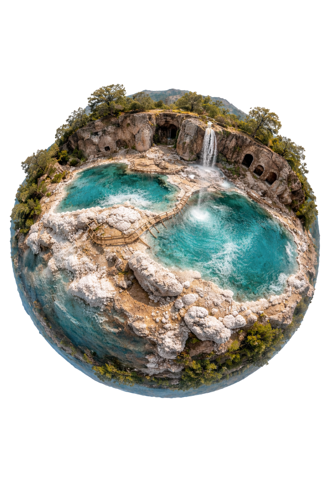

Herkunft
Gewonnen in anatolischen Salzregionen mit Fokus auf nachvollziehbare Lieferwege.
Anatolisches Salz steht für mineralische Reinheit, traditionelle Gewinnung und eine Herkunft, die sich nachvollziehbar kommunizieren lässt.

Anatolien ist seit Jahrhunderten ein Raum von Handelswegen, handwerklicher Verarbeitung und geologischer Vielfalt. Genau darin liegt der Charakter dieses Salzes: nicht in austauschbaren Wellness-Floskeln, sondern in einer realen Herkunft.
Das Salz wird als ursprüngliches Naturprodukt gezeigt, dessen Wert aus Reinheit, Verfügbarkeit und glaubwürdiger Erzählbarkeit entsteht.
Für Partner, die ein ehrliches Naturprodukt mit klarer Herkunft, verlässlicher Qualität und hochwertiger Wirkung suchen.
Gewonnen in anatolischen Salzregionen und geeignet für eine glaubwürdige Herkunftskommunikation.
Geeignet für Partner, die auf Reinheit, Dokumentation und verlässliche Chargen achten.
Passend für Kulinarik, Hammam, Spa und hochwertige Handelskonzepte.
Herkunft, Materialität und Qualität machen anatolisches Salz in unterschiedlichen Bereichen besonders attraktiv.
Für Küchen und Konzepte, die auf charaktervolle Rohwaren und verlässliche Nachbestellung setzen.
Hier zählt das sinnliche Produktbild: Textur, Mineralität und ritualisierte Anwendung.
Für Händler, Feinkost und spezialisierte Konzepte mit Fokus auf differenzierbare Naturprodukte.
Sie interessieren sich für anatolisches Salz für Gastronomie, Spa oder Handel? Senden Sie uns Ihre Anfrage, und wir melden uns mit den passenden Informationen zurück.
Gern unterstützen wir Sie bei Produktfragen, Mengen, Einsatzbereichen und individuellen Anforderungen.